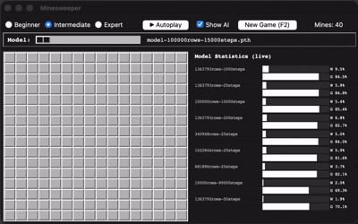
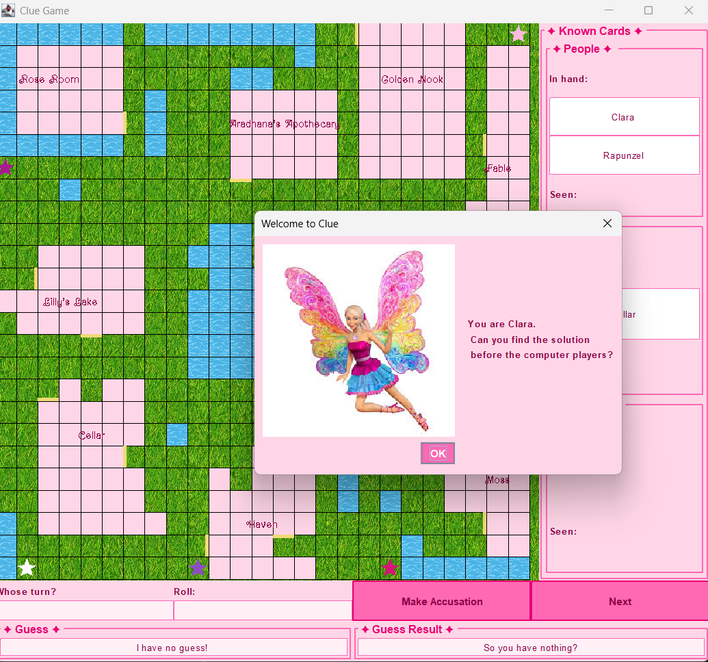

Education
Colorado School of Mines — B.S. Computer Science
Cumulative GPA: 4.00/4.00 · Dean's List Honors, Fall 2024 – Spring 2026
Relevant coursework: Advanced Software Engineering, Programming Languages, Algorithms, Artificial Intelligence, Database Management, Systems Programming, Data Structures and Algorithms, Computer Organization, Game Development.
Skills
Languages: C++, Python, Java, SQL, JavaScript, OCaml, Bash, HTML/CSS
Tools: PostgreSQL, MongoDB, GitHub, PyTorch, Snorkel, Tkinter, raylib, LLM Studio, BERTopic
Concepts: Algorithms, Data Structures, Machine Learning, NLP, Object-Oriented Programming, Agile/Scrum
Employment & Research Experience
Colorado School of Mines — CSCI406 Algorithms, Teaching Assistant
- Hold weekly office hours, clarifying core algorithmic concepts and tailoring explanations to each student's level of understanding.
- Conduct oral, midterm-style grading interviews that evaluate depth of algorithmic understanding beyond what written exams capture.
- Grade weekly homework assignments and provide constructive feedback to help students close problem-solving gaps.
The Challenge Foundation — Math Teacher
- Designed a full 5-week math curriculum from scratch for incoming 6th and 7th grade students, including daily lesson plans, pre-assessments, and capstone activities aligned to Khan Academy.
- Developed and iteratively refined worksheets, homework, and station activities based on real-time student feedback.
Colorado School of Mines — #HappyPlace Lab, Undergraduate Researcher (SURF Fellow)
- Research the computational detection of spiritual care narratives in online communities by building an NLP pipeline with weak supervision (Snorkel), fine-tuned transformer models, and Python/MongoDB to label Reddit posts and replies for empathy, self-disclosure, and support-seeking behavior.
- Conduct structured literature reviews synthesizing frameworks across peer support, self-disclosure, meaning-making, and narrative identity to inform co-authored publications.
Colorado School of Mines — PHGN200 E&M Physics, Teaching Assistant
- Hold weekly help hours to provide individualized guidance, clarify concepts, and support students in problem-solving.
- Collaborate with fellow TAs during physics studios to answer questions and assist students in setting up and running labs.
Private Employer — Personal Assistant
- Designed and maintained organizational systems for scheduling, communications, and task tracking, reducing coordination overhead and improving day-to-day efficiency.
- Applied structured, analytical problem-solving to manage competing priorities under time constraints, including building comparative option analyses to support faster decision-making.
Projects
Minesweeper AI & Analytics Platform

- Built a Minesweeper game with a live AI confidence overlay powered by several trained neural network models, an autoplay bot, and a model selector.
- Designed a PostgreSQL backend that tracks model performance over time using CTEs for stratified sampling, window functions for a model leaderboard, and WIDTH_BUCKET for density analysis.
- Built a live stats panel refreshing every 5 seconds to display win rate, accuracy, and combined model rankings.
De-Bug — 1st Place, BlasterHacks (60+ participants)
▶ If the video above doesn't load, watch it on YouTube- Built a 3D platformer/puzzle game entirely from scratch in C++, including a custom physics engine (collision detection, gravity, movement) and game engine, rather than relying on a pre-built framework.
- Served as tech lead for game logic and system architecture — designing an event bus, puzzle engine, data-driven level loader that generates platforms and interactions from structured text files, and an in-game computer terminal used to gate level progression.
Clue

- Built a full-stack Java implementation of Clue that reads in custom maps and player configurations and manages the complete game.
- Designed autonomous, intelligent AI opponents with suggestion and accusation logic that reason over available game information.
- Built the board rendering, game control panel, and interactive suggestion dialog from scratch using Java Swing.
Activities & Awards
Society of Women Engineers — Peer Mentor / General Member
- Mentor underclassmen on academics, courses, technical skills, and personal development, supporting overall growth and success.
Boettcher Scholarship
- Chosen as one of 50 students selected for a four-year full-ride merit scholarship out of more than 1,900 applicants.